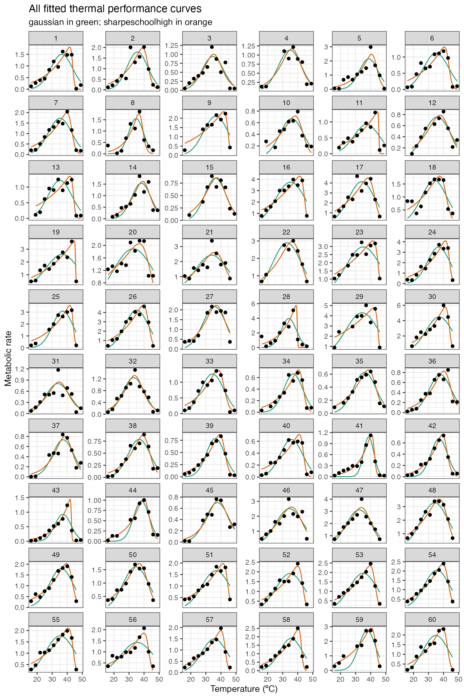

vignettes/fit_many_curves.Rmd
fit_many_curves.RmdIn the final part of the general pipeline, we demonstrate how multiple models can be fitted to multiple TPCs. Instead of picking all 23 model formulations to demonstrate this approach, we will use only 2 models in this example: gaussian_1987() and sharpeschoolhigh_1981().
We can demonstrate the fitting of multiple curves by modelling all 60 TPCs from the example dataset of rTPC curve from the example dataset rTPC. These TPCs are of respiration and photosynthesis of the aquatic algae, Chlorella vulgaris. These algae differed in their growth temperature, growth_temp, and how long they had been grown at that temperature, process, either for ~100 or ~10 generations.
Using a similar approach to the previous vignette, models can be fitted to each individual curve using list columns purrr::map() to fit and store multiple models in a data frame.
When fitting lots of models at once, it is useful to know the progress the code as it may take a long time to run. We can create a progress bar using the progress package. In order to do this, I create a new function nls_multstart_progress() that contains a pb$tick() call. This means every time the function is called, it will add one tick onto the progress bar. The progress bar is created using progress_bar$new(), where we set the total length of the progress bar is set by the number of models in total being fit.
# load in data data("chlorella_tpc") d <- chlorella_tpc # when scaling up our code to fit hundreds of models, its nice to have a progress bar # edit nls_multstart to allow for a progress bar nls_multstart_progress <- function(formula, data = parent.frame(), iter, start_lower, start_upper, supp_errors = c("Y", "N"), convergence_count = 100, control, modelweights, ...){ if(!is.null(pb)){ pb$tick() } nls_multstart(formula = formula, data = data, iter = iter, start_lower = start_lower, start_upper = start_upper, supp_errors = supp_errors, convergence_count = convergence_count, control = control, modelweights = modelweights, ...) } # start progress bar and estimate time it will take number_of_models <- 2 number_of_curves <- length(unique(d$curve_id)) # setup progress bar pb <- progress::progress_bar$new(total = number_of_curves*number_of_models, clear = FALSE, format ="[:bar] :percent :elapsedfull") # fit two chosen model formulation in rTPC d_fits <- nest(d, data = c(temp, rate)) %>% mutate(gaussian = map(data, ~nls_multstart_progress(rate~gaussian_1987(temp = temp, rmax,topt,a), data = .x, iter = c(3,3,3), start_lower = get_start_vals(.x$temp, .x$rate, model_name = 'gaussian_1987') - 10, start_upper = get_start_vals(.x$temp, .x$rate, model_name = 'gaussian_1987') + 10, lower = get_lower_lims(.x$temp, .x$rate, model_name = 'gaussian_1987'), upper = get_upper_lims(.x$temp, .x$rate, model_name = 'gaussian_1987'), supp_errors = 'Y', convergence_count = FALSE)), sharpeschoolhigh = map(data, ~nls_multstart_progress(rate~sharpeschoolhigh_1981(temp = temp, r_tref,e,eh,th, tref = 15), data = .x, iter = c(3,3,3,3), start_lower = get_start_vals(.x$temp, .x$rate, model_name = 'sharpeschoolhigh_1981') - 10, start_upper = get_start_vals(.x$temp, .x$rate, model_name = 'sharpeschoolhigh_1981') + 10, lower = get_lower_lims(.x$temp, .x$rate, model_name = 'sharpeschoolhigh_1981'), upper = get_upper_lims(.x$temp, .x$rate, model_name = 'sharpeschoolhigh_1981'), supp_errors = 'Y', convergence_count = FALSE)))
[=========================================================] 100% 00:00:40Like previous vignettes, the predictions of each model can be estimated using broom::augment(). To achieve this, we first create a new list column containing high resolution temperature values by taking the min and max of each curve. Next we stack the models and finally we get the new predictions using the map2(), which allows us to use both fit and new_data list columns. After unnesting the preds column, we are then left with high resolution predictions for each curve. As this is a lot, each line of the code is commented.
# create new list column of for high resolution data d_preds <- mutate(d_fits, new_data = map(data, ~tibble(temp = seq(min(.x$temp), max(.x$temp), length.out = 100)))) %>% # get rid of original data column select(., -data) %>% # stack models into a single column, with an id column for model_name pivot_longer(., names_to = 'model_name', values_to = 'fit', c(gaussian,sharpeschoolhigh)) %>% # create new list column containing the predictions # this uses both fit and new_data list columns mutate(preds = map2(fit, new_data, ~augment(.x, newdata = .y))) %>% # select only the columns we want to keep select(curve_id, growth_temp, process, flux, model_name, preds) %>% # unlist the preds list column unnest(preds) glimpse(d_preds) #> Rows: 12,000 #> Columns: 7 #> $ curve_id <dbl> 1, 1, 1, 1, 1, 1, 1, 1, 1, 1, 1, 1, 1, 1, 1, 1, 1, 1, 1, … #> $ growth_temp <dbl> 20, 20, 20, 20, 20, 20, 20, 20, 20, 20, 20, 20, 20, 20, 2… #> $ process <chr> "acclimation", "acclimation", "acclimation", "acclimation… #> $ flux <chr> "respiration", "respiration", "respiration", "respiration… #> $ model_name <chr> "gaussian", "gaussian", "gaussian", "gaussian", "gaussian… #> $ temp <dbl> 16.00000, 16.33333, 16.66667, 17.00000, 17.33333, 17.6666… #> $ .fitted <dbl> 0.02790076, 0.03175769, 0.03607053, 0.04088150, 0.0462351…
We can then plot the predictions of each curve using ggplot2.
# plot ggplot(d_preds) + geom_line(aes(temp, .fitted, col = model_name)) + geom_point(aes(temp, rate), d) + facet_wrap(~curve_id, scales = 'free_y', ncol = 6) + theme_bw() + theme(legend.position = 'none') + scale_color_brewer(type = 'qual', palette = 2) + labs(x = 'Temperature (ºC)', y = 'Metabolic rate', title = 'All fitted thermal performance curves', subtitle = 'gaussian in green; sharpeschoolhigh in orange')

The traits of each thermal performance curve can also easily be calculated.
# stack models and calculate extra params d_params <- pivot_longer(d_fits, names_to = 'model_name', values_to = 'fit', c(gaussian,sharpeschoolhigh)) %>% mutate(params = map(fit, est_params)) %>% select(curve_id, growth_temp, process, flux, model_name, params) %>% unnest(params) glimpse(d_params) #> Rows: 120 #> Columns: 15 #> $ curve_id <dbl> 1, 1, 2, 2, 3, 3, 4, 4, 5, 5, 6, 6, 7, 7, 8, 8,… #> $ growth_temp <dbl> 20, 20, 20, 20, 23, 23, 27, 27, 27, 27, 30, 30,… #> $ process <chr> "acclimation", "acclimation", "acclimation", "a… #> $ flux <chr> "respiration", "respiration", "respiration", "r… #> $ model_name <chr> "gaussian", "sharpeschoolhigh", "gaussian", "sh… #> $ rmax <dbl> 1.4972473, 1.8127063, 1.7935416, 1.9798352, 0.9… #> $ topt <dbl> 36.338, 41.646, 35.554, 39.007, 34.615, 35.170,… #> $ ctmin <dbl> 18.695, 2.539, 18.835, 6.086, 17.368, 11.970, 1… #> $ ctmax <dbl> 53.981, 45.558, 52.272, 47.680, 51.861, 53.064,… #> $ e <dbl> 0.6758954, 0.5802496, 0.8427748, 0.6621701, 1.0… #> $ eh <dbl> 1.0767824, 11.4840311, 1.0954099, 2.4774826, 1.… #> $ q10 <dbl> 2.373766, 2.063147, 2.927011, 2.305129, 3.72211… #> $ thermal_safety_margin <dbl> 17.643, 3.912, 16.718, 8.673, 17.246, 17.894, 1… #> $ thermal_tolerance <dbl> 35.286, 43.019, 33.437, 41.594, 34.493, 41.094,… #> $ skewness <dbl> -4.008871e-01, -1.090378e+01, -2.526351e-01, -1…